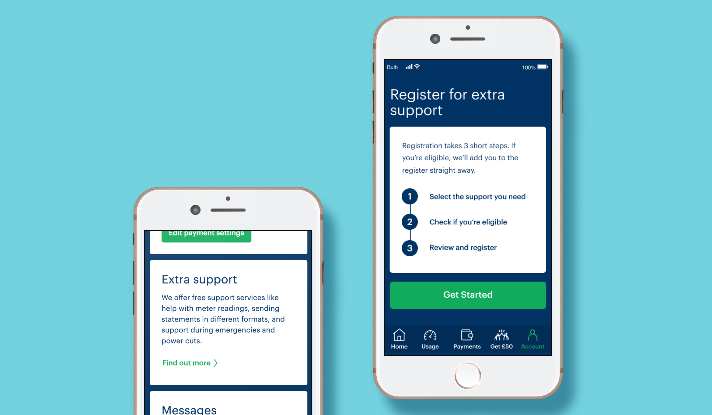
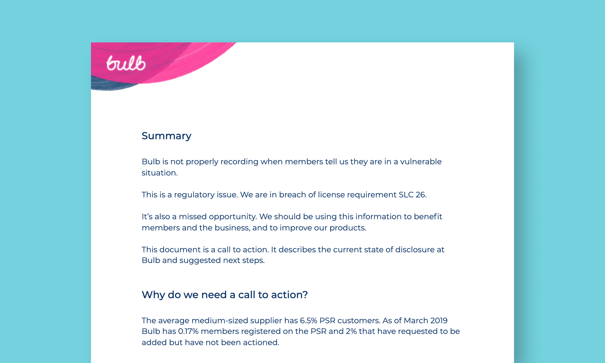
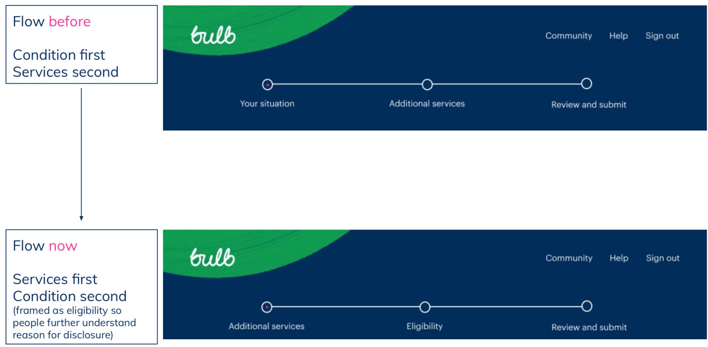
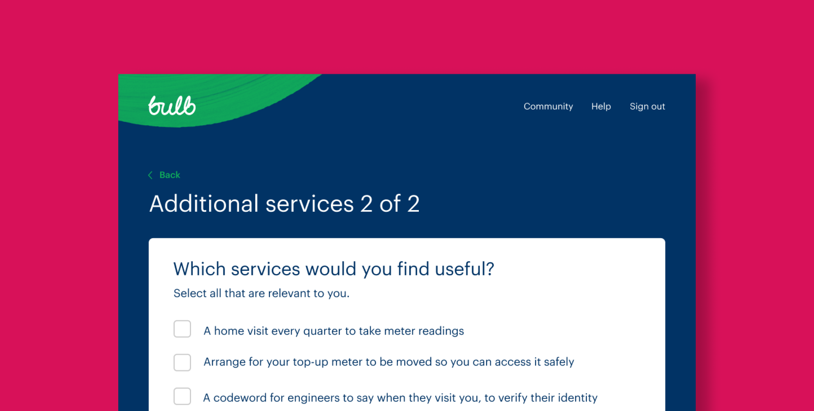
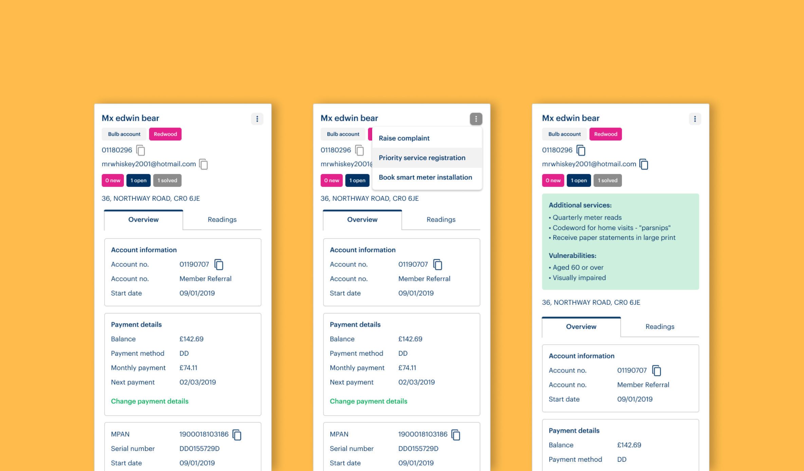
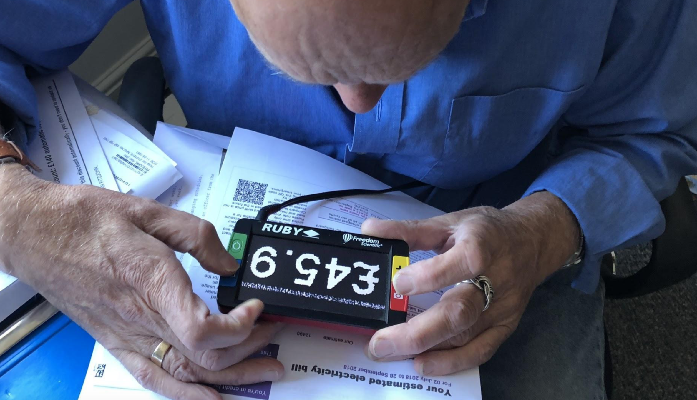
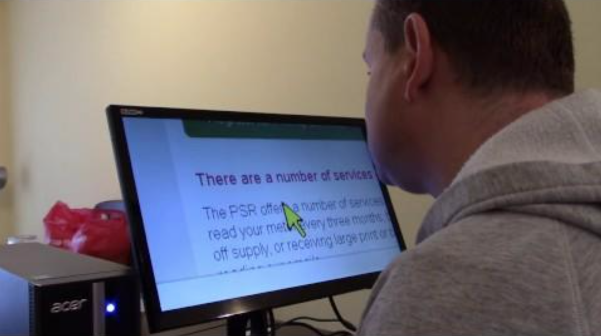
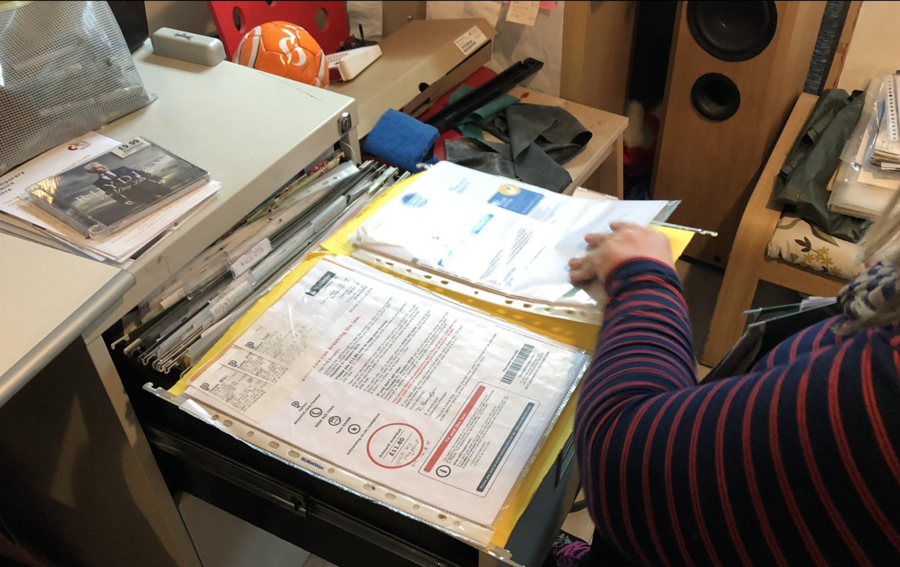

Letting your energy supplier know when you need extra support
The challenge
How can we adapt Bulb's services so they better service customers in vulnerable situations?
The solution
A service where you can register for additional support via an accessible online form.
Keep reading to hear how we got there or if you're with Bulb, check out the live service.
Context
Bulb wasn't recording when members told them they were in a vulnerable situation. By "Vulnerable situation" that could be something that made it difficult for them to pay, or it could be that they would be particularly unsafe if they lost gas or electricity connection.
This was a regulatory issue to record data for the Priority Services Register that protects people in vulnerable situations. The average supplier our size had 7% of their customers on the PSR, and 20% of the UK has a disability, yet Bulb had 0.17% of their customers on the PSR.

But it was also a missed opportunity to give a quality, equitable service and let customers know about the extra support we can offer.
Bulb was a busy, hyper-growth environment which didn’t leave a lot of time to think about our disabled customers. I had to convince senior management before we got started that this was worth doing. I did this by writing a data-driven call to action, including a competitive anaysis and alongside a prototype sign up form to start building a vision.
We were given the remit to develop this project, do some research and find a way for customers to request additional support and meet our legal obligations as an energy supplier.
Discovery: How do people want to register for extra support?
With the mandate in place, we were able to explore how people wanted to register for support.
For the PSR to be more than a regulatory hoop to jump and actually beneficial to customers, it needed to exist at the intersection of how we behave on a:
- Macro level
How our services, behaviors and language can show awareness and empathy. - Micro level
The practical accessibility of our services, products and design patterns.
It's not easy to recruit participants for a diverse range of accessibility issues so we wanted to get the most out of our time. That's why we developed the jot-form prototype into a coded prototype using Bulb's design system so we could test both the macro and micro elements of the service at once.
We spoke to 6 people, in their homes, with their own technology. They all experienced different kinds of accessibility issues, and were all eligible for the PSR.
Macro level | How do people in vulnerable situations want to share information with us?
- Don't ask me what I am or I have, ask me what I need.
The people we spoke to were tired and angry for being asked what disability they have, rather than what they need.We had this wrong in the prototype, we asked about their circumstances before explaining the services we had on offer. This angered participants who were fed up with being asked to go into unnecessary detail about their condition, only for organisations to make assumptions about what they need.
What we did
We flipped the order we asked questions. Let people tell us what services they need first, and then let us know why they are eligible.  - The need for additional support is there, but nobody thinks their supplier would help them.
One participant used a bed hoist to get out of bed. When there was a power cut in her building, she couldn't get out of bed for two days, not even to get the phone to call someone for help. But even on reflection, they didn't think there was anything their supplier could have done to help. Expectations of energy suppliers is very low, we need to proactively tell people the extra support we can offer. What we did
Created a multi-touchpoint comms plan for communicating the PSR to all our customers. - "Priority" makes people uncomfortable
At the idea of being 'prioritised' for reconnection, almost all our participants felt uncomfortable or 'cheeky' registering for support. Disabled people do not necessarily see themselves as more of a priority than someone else. This taught us that language really matters and the industry language made people feel bad registering for the support they were entitled to. What we did
Disconnected our customer facing language from the language of the energy industry. "Priority services" became "Additional services", "Priority reconnection" became "Support if you have a power cut"  - I should only have to tell you once
When discussing what we think we will do with the information, participants expected us to join the dots. They weren't going to be annoyed if someone on the end of the phone knows about their disability, they would be annoyed if they had to repeat it again. When disclosing important information about their lives, people expect this information to be remembered, rather than a concern for the data being shared to our partners. What we did
We ensured that the information people told us via the form was immediately visible for customer service staff when they call. 
Micro level | How accessible are our form design patterns?
Bulb's design team really cares about accessibility, but it is one thing to follow guidelines, and another to see your products being used. We learnt a lot, but these were the main things we took back and incorporated into our design system.
- Optimise patterns for one-handed use
For people with restricted mobility, our mobile design components were not all optimised for one-handed use, such as full screen buttons. - Quit changing things, resist constant re-design
People who use assistive tech for reading or using something regularly e.g. a monthly bill or submitting readings on the app, rely on the layout staying the same. Regularly tweaking designs makes that difficult.  - Prevent tunnel vision by avoiding out of focus state changes.
If you use a screen magnifier and the state changes elsewhere on the page, that is hard/impossible to notice. We had a few error patterns where states changed elsewhere without people noticing.  - "Time taken for you, isn't the same for me"
"This form will take 2-3 minutes" made eyes roll. It can take significantly longer to complete a task when using assistive technology or managing a disability. Time estimates should be inclusive or not be there at all. We changed our language to reflect the number of steps, and to keep things relative to your ability, we referred to 'short' steps and used indicators such as 'sit down', 'make a cup of tea', 'get your documents ready' etc. to suggest a longer form. - Vague language creates anxiety, keep it clear.
What can be seen as softer language, can be vague for people with autism that take words more literally. Vagueness can cause anxiety in that context, so we must write what is clear over what sounds nice. - Paper bills are necessary, don’t penalise people.
People with a cognitive disability may rely on carers to keep on top of their bills. Having printed versions makes bills easy to share with others, and we shouldn't penalise people for needing them.  - Our footers read like an afterthought
A seamless screenreader experience was ruined once it reached our footer and found code without any hierarchy.
Refining the designs and shipping
With all the changes following our research and some quick remote usability testing, we were ready to ship the MVP. We used the comms plan to start advertising the service.
We then worked on making sure the customer service teams were aware of the changes, and it was reflected in their internal tools. This was paired with the development of a 2-part training program for new and intermediate customer service staff. Initially ran by me but then adopted into the core training.
If you're not a Bulb member, you can get a better idea of the full flow and related designs by checking out the figma file below
Impact
- 5% increase in customers registered for additional support, despite significant customer growth and churn.
- "Customers in vulnerable situations" became a core part of the training program for customer service teams.
- Use of registration data meant we reached the target number of customers for the Warm Home Discount.
- Made accessibility improvements to our design system which was deployed across our whole suite of products.
- This work triggered an additional project looking specifically at financial vulnerability, led by me.
Next time
Not every story has a happy ending. When designers leave, and new ones come in the logic for design decisions doesn't always get passed on in the way you'd hope.
Redesigns mean that the current Priority Services sign up flow asks about people's disability before asking what they need. You can sign up for yourself if you have a Bulb account.
Next time I will find ways to spread the findings from research in a way that has longevity. The accessibility posters at GDS are a real inspiration for that.
Team
- Vicky: Product designer
- Jenna: User researcher
- Luke: Front-end developer
- Tom: Back-end developer
- JJ: Operations manager